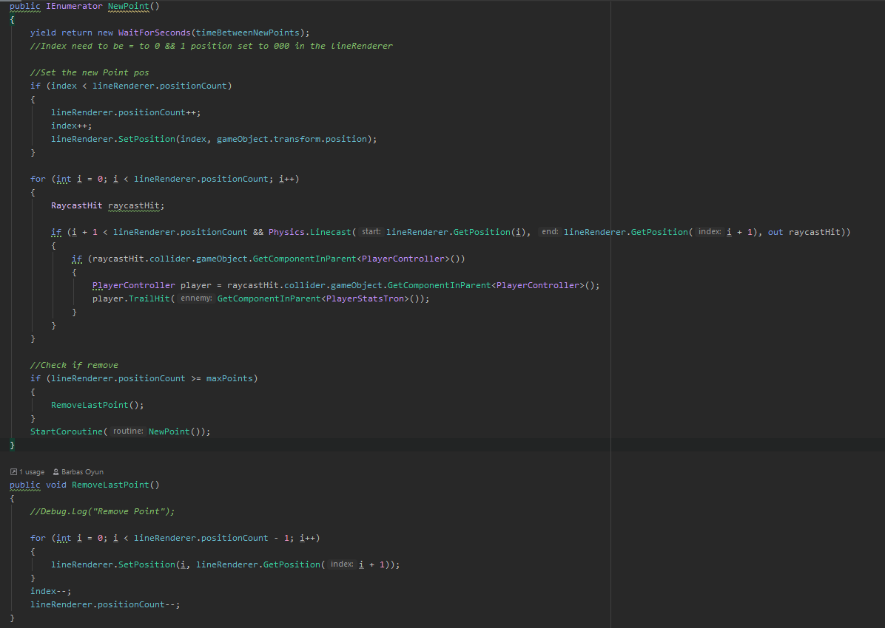

Le projet à pour objectif de créer un jeu en multijoueur local(jouable à la manette) qui recrée une bataille en arène des motos(lightcycle) de tron, c'est aussi un de mes premiers projet réaliser en HDRP. Le projet à été réaliser en groupe.
J'ai personnellement réaliser : un modèle 3D d'une moto et les modèles 3D de l'arène et de ces élements sur 3DSmax, le level design de l'arène, le système de trail des motos (nous avons utiliser shader graph pour créer le material, c'est un de mes premiers material réaliser avec shader graph, j'ai reçu de l'aide) visuelle et collision, explsoion des moto, particules de boost(au sol de l'arène) et speed lines, intégration, participation au gamedesigne plus projet en générale.
Vous pouvez tester ce projet directement sur la page itch.io du projet(accessible en bas de cette page).


Le projet se joue à la manette jusqu'à quatres joueurs, le deuxième étage de l'arène n'apparait que à partir de 3 joueur. Le but principale va être de détruire les moto ennemies en utilisant sont tracé et l'environement, pour sa les joueurs ont à leurs disposition sur l'arène des emplacement de boost qui vont remplire à moitier ou au maximum la jauge de boost du joueur(les emplacements les plus risqué rapporte le plus).
Le projet est réaliser sur Unity en HDRP. J'ai créer l'arène avec des coins aroundits pour empécher les motos de trop se bloquer à certain moments, j'ai utiliser le composent de TrailRenderer pour le visuelle du trail, j'ai recréer le composent lineRenderer (le composent lineRenderer est similaire au trailRenderer masi avec l'effet de tracé) avec un script ce qui ma permis de pourvoir modifier avec plus de paramètre le tracés des motos.
trailRenderer code Ce projet n'était pas très orienté code, j'ai quand même réaliser le code pour recréer le lineRenderer:

C'était un de mes premier projet réaliser en HDRP j'ai beacoup appris sur beacoup d'élements visuel de Unity comme : les particules, shaderGraph, HDRP, les material